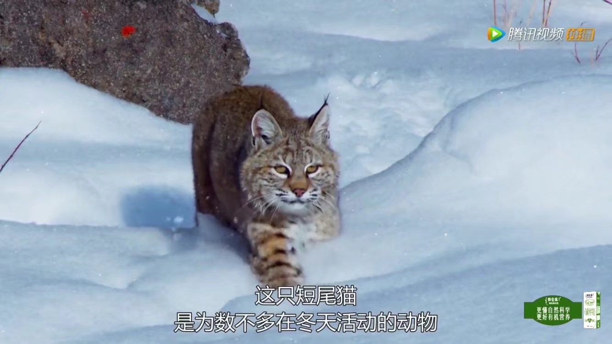
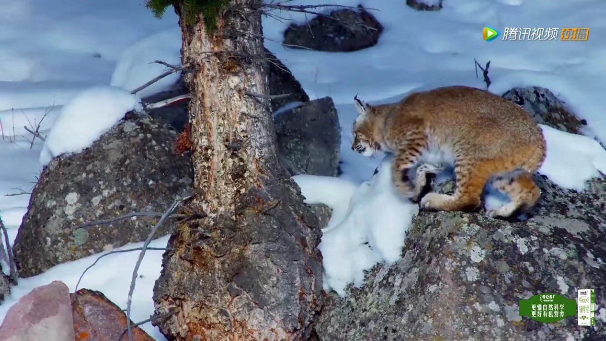
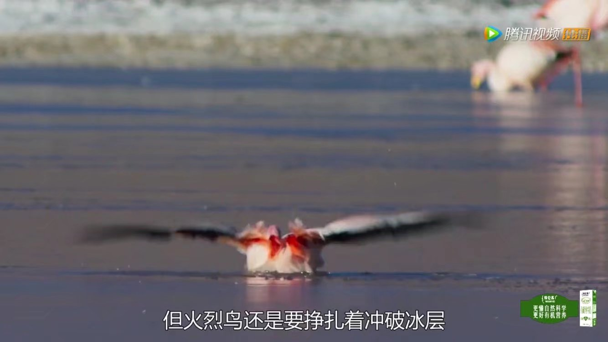
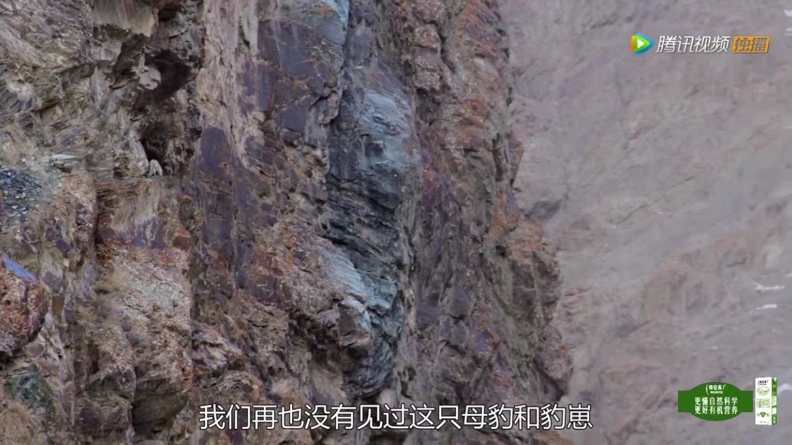

雪豹像高山上的所有生物一样它们需要调整身体特性和生活习性才能在这里生存 极端海拔上的生活造就了一些地球上最顽强的动物。

它通过监听最微弱的动静捕食为避免脚步咯硌作响暴露行踪它把巨砾当作踏脚石前进

一只老鼠


太阳下山每个夜晚都有如冬日般严寒气温降到零下五度山坡变成冰之花园

如今在阿尔卑斯山人类对大自然的破坏甚至改变着至高的山峰即使现在喜马拉雅山脉现在都变脆弱了坐拥绝大多数世界高峰绵延百万平方公里喜马拉雅山脉堪称绝世奇观

随着这些山峰的积雪线逐年上升野生生物存活的空间愈发狭小这给高山生物中最为威严的物种造成了生存挑战
雪豹由于十分罕见它们的生活细节一直成谜它们非常稀有每100平方公里内只有四只根本没有足够的食物来供养更多
它们是独居动物
但它们很清楚附近雪豹的所在和动向
它们会在一些特殊地方留下信号
但有时雪豹必须聚在一起这些时候往往很暴力

